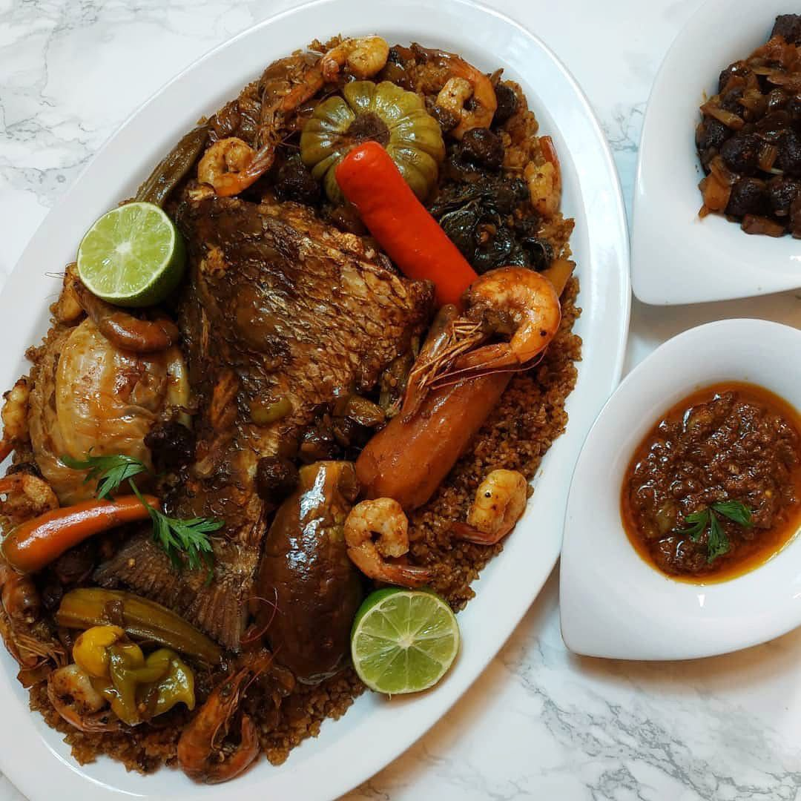
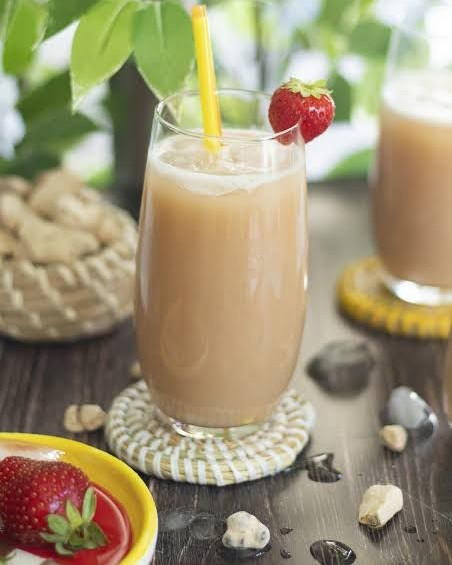

Les incontournables de Dakar
- Le Thiéboudienne : Riz au poisson et légumes.
- Le Yassa au Poulet : Poulet mariné aux oignons et citron vert.
- Le Jus de Bissap : Boisson rafraîchissante à base de fleurs d'hibiscus.
La cuisine du Sénégal est souvent considérée comme l'une des meilleures d'Afrique de l'Ouest. Elle est riche, généreuse et basée sur le partage.

